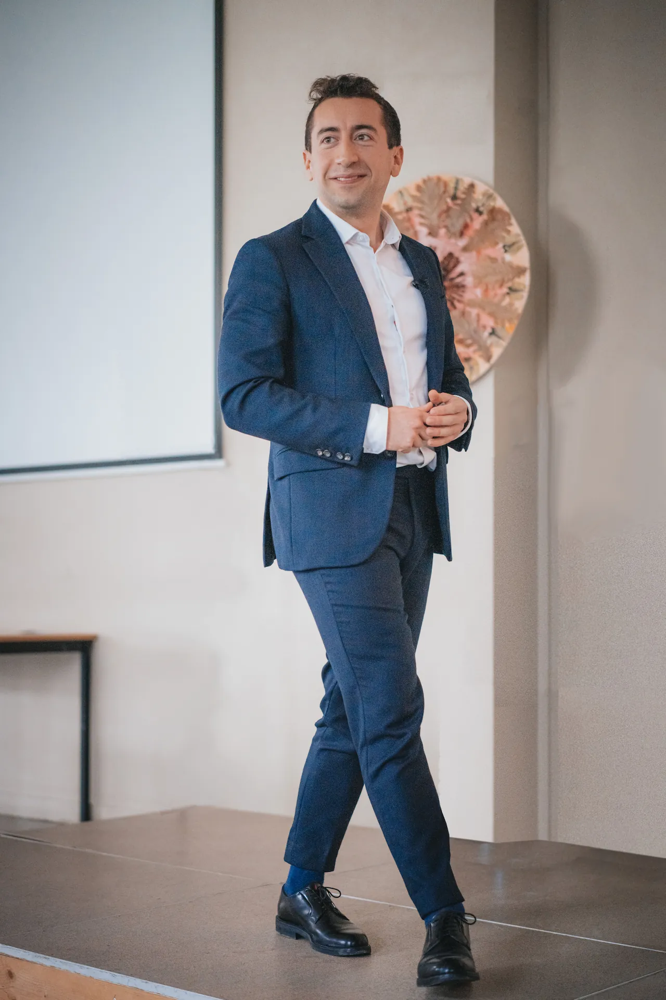

Centre de formation et de coaching en prise de parole, leadership, management et cohésion d’équipe.
Message du fondateur
Pierre a grandi avec deux passions : regarder les étoiles et raconter des histoires.
Après un parcours scientifique qui l’a amené au plus haut niveau en devenant docteur en astrophysique (PhD), il débute une carrière de cadre dans le secteur des hautes technologies. À l’aube de ses 30 ans, fort de ses expériences dans le milieu de la recherche, de l'ingénierie et de l'enseignement, il décide de revenir à sa passion de l’art oratoire, convaincu de pouvoir aider ceux dont la prise de parole freine la réussite professionnelle.
Devenu formateur professionnel et coach certifié, Pierre s’est formé au théâtre au Cours Florent à Paris et à l’éloquence avec Toastmasters International. Enseignant la communication et l'économie du spatial à l'Université PSL, il fonde Letmotiv en 2020.
Centre de formation et de coaching en prise de parole en public, leadership, management et cohésion d'équipe, Letmotiv accompagne les entreprises et les individus pour qui communiquer est un enjeu majeur. Grâce à une méthode innovante à la croisée des sciences, de l'art et de la formation, Letmotiv est devenu un leader sur le marché en quelques années seulement avec un taux de satisfaction client de 100 %.

Notre méthode innovante permet à nos clients de libérer leur potentiel en matière de communication et de progresser réellement dans leur vie professionnelle.
Nous croyons que les leaders capables de prendre la parole en public pour partager leurs idées peuvent avoir un impact positif sur la société comme sur leur entourage.
Parce que prendre la parole en public est une compétence qui peut littéralement transformer des vies, nous nous engageons à fournir des accompagnements de la plus haute qualité.
L’équipe de formateurs
Chez Letmotiv, chaque formateur allie expertise technique, pédagogie active et expérience de terrain pour vous aider à prendre la parole en public avec impact.
Pierre Li Cavoli
Spécialiste scientifique
🎓 Enseigne la communication & l'économie du spatial – Université PSL